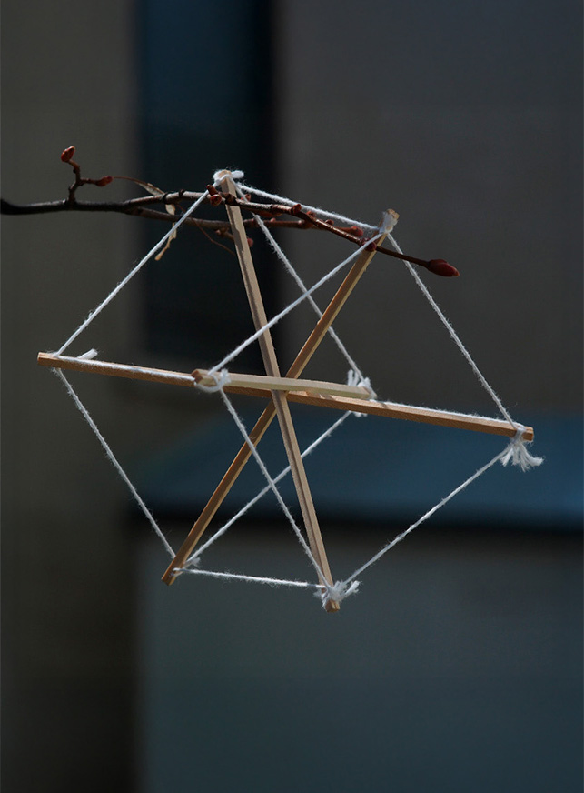

Cette installation, lieu de recuillement presque immatériel, se comprend comme une interrogation profonde face à la spiritualité blessée de l'ère moderne. Elle reprend en fait le cri désespéré de l'homme en quête de sens face à l'univers, mais cherche à le réconcilier avec le froid et vide écho de l'univers.
Ce parcours inverse la séquence habituellement retrouvée dans les églises où un grand espace ouvert et lumineux succède à un autre plus cloisonné et sombre, au contraire, cette installation suggère l'introspection par la découverte d'un passage de plus-en-plus sombre.

La structure, créée par la répétition de modules en tenségrité, permet un espace plutôt évoqué que clairement délimité. C'est l'ambiance et les jeux de lumière qu'elle crée qui hiérarchisent l'espace et suggèrent la spiritualité. Conséquemment, la découverte du lieu se fait autant par les sens que par le jeu de l'imagination. Ce n'est pas l'architecture que l'on constate à travers cette installation, mais l'effet qu'elle a sur les sens.
Le module, dans sa simplicité, se répète pour composer une structure infiniement complexe dans les impressions qu'il provoque.



Équipe
Rémi Bonin,
Marianne Beauboin et
Cécilia Burlet
Contexte
Géométrie, structure et tectonique
Université Laval, ARC-1022
Hiver 2024
Richard Pleau